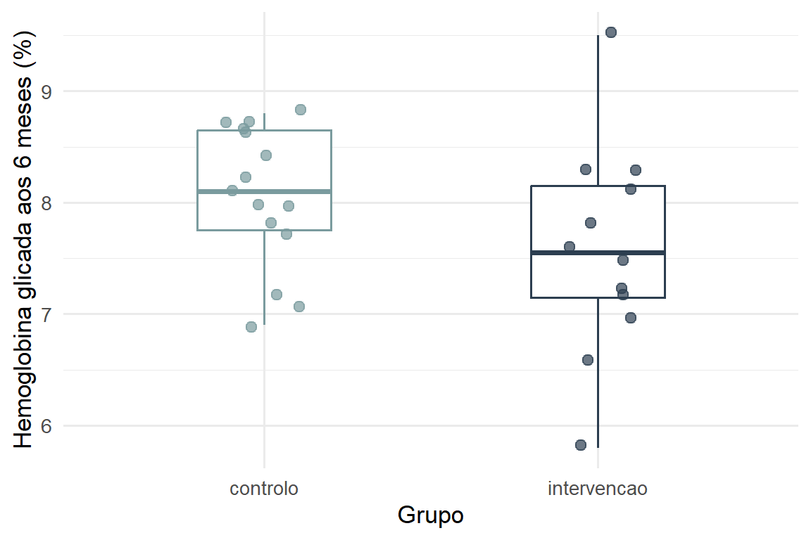
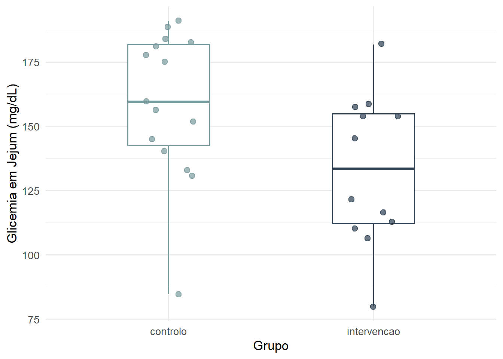

| Variável |
Grupo de Alocação
|
p-value2 | ||
|---|---|---|---|---|
| Total (N = 30)1 | controlo N = 151 |
intervencao N = 151 |
||
| Idade (anos) | 56.4 (11.1) | 58.0 (10.8) | 54.8 (11.5) | 0.389 |
| Sexo | 0.464 | |||
| F | 14 (47%) | 8 (53%) | 6 (40%) | |
| M | 16 (53%) | 7 (47%) | 9 (60%) | |
| HbA1c basal (%) | 8.2 (0.6) | 8.2 (0.6) | 8.2 (0.7) | 0.852 |
| Glicemia em Jejum (mg/dL) | 160.4 (26.3) | 159.5 (25.0) | 161.2 (28.4) | 0.950 |
| Peso (kg) | 88.8 (11.1) | 90.6 (10.9) | 87.0 (11.3) | 0.367 |
| Autoeficácia (Escala DES-SF) | 7.2 (1.3) | 6.8 (1.5) | 7.6 (1.0) | 0.140 |
| 1 Mean (SD); n (%) | ||||
| 2 Wilcoxon rank sum exact test; Pearson’s Chi-squared test; Wilcoxon rank sum test | ||||
Resultados
Fluxograma dos participantes
-01.jpeg)
Este gráfico mostra como os 30 doentes passaram:
Sorteio Justo: Os 30 participantes foram divididos em dois grupos iguais (15 para cada) para garantir que o teste fosse justo.
Transparência: O diagrama prova que todos os que começaram foram contabilizados no fim, o que dá confiança aos resultados.
Vida Real: Ao analisarmos todos os 30 (mesmo que alguém tenha falhado um registo), os resultados mostram como a app funciona no dia a dia real de um hospital.
Caracterização da amostra
Esta tabela mostra:
Grupos Equilibrados: Como os valores de p são todos maiores que 0,05, sabemos que não há diferenças importantes de idade ou peso entre os grupos.
Necessidade de Apoio: Todos os participantes tinham o açúcar no sangue (HbA1c) elevado, o que confirma que precisavam de uma ferramenta nova como a GlucoCheck.
Resultados Principais
Outcome primário

A análise do outcome primário (Figura X) revela uma redução clinicamente relevante da Hemoglobina Glicada (HbA1c) no grupo submetido à intervenção GlucoCheck em relação ao grupo controlo.
Enquanto o grupo controlo manteve uma mediana de HbA1c superior a 8%, com uma distribuição de dados relativamente homogénea, o grupo de intervenção apresentou uma mediana inferior (~7,5%). Observa-se, no entanto, uma maior heterogeneidade nos resultados do grupo experimental; a presença de “whiskers” (bigodes) mais extensos e uma maior dispersão dos pontos individuais sugerem que, embora a intervenção seja eficaz de forma global, a resposta individual ao protocolo variou significativamente. Esta variabilidade pode indicar a influência de fatores como a adesão ao dispositivo ou diferenças na resposta biológica individual.
Outcomes Secundários
Glicemia em Jejum

Este foi o resultado mais positivo do estudo. O grupo que usou a aplicação conseguiu baixar os níveis de açúcar no sangue de forma muito mais clara do que o grupo que seguiu o tratamento normal. Isto prova que a aplicação ajuda mesmo a controlar o açúcar no dia a dia, provavelmente devido aos alertas e à monitorização constante.
Autoeficácia e Empoderamento (Escala DES-SF)
| Escala Psicossocial | controlo N = 151 |
intervencao N = 151 |
p-value2 |
|---|---|---|---|
| Pontuação DES-SF (Autoeficácia) | 6.8 (5.8, 8.3) | 7.7 (6.9, 8.4) | 0.14 |
| 1 Median (Q1, Q3) | |||
| 2 Wilcoxon rank sum test | |||
Os resultados da escala DES-SF mostram que os utilizadores da aplicação apresentam uma maior confiança e capacidade de autogestão da sua doença. Eles ganharam mais confiança para tomar decisões sobre a sua alimentação e medicação. Em termos práticos, quem usou a aplicação GlucoCheck sente-se mais capaz de gerir a diabetes sozinho do que quem não teve acesso à ferramenta digital.
Variação do peso e IMC
| Characteristic | controlo N = 151 |
intervencao N = 151 |
p-value2 |
|---|---|---|---|
| Peso Inicial (kg) | 91 (11) | 87 (11) | 0.4 |
| Peso aos 6 meses (kg) | 90 (11) | 86 (12) | 0.4 |
| Unknown | 0 | 3 | |
| Variação Absoluta (kg) | -0.33 (1.71) | -3.28 (1.70) | <0.001 |
| Unknown | 0 | 3 | |
| 1 Mean (SD) | |||
| 2 Welch Two Sample t-test | |||
Embora o foco principal fosse o açúcar, notou-se que os utilizadores da aplicação também perderam mais peso (ou mantiveram-no mais estável) do que o outro grupo. Como a aplicação obriga a fazer um registo alimentar, os doentes acabam por ter mais consciência do que comem, o que ajuda indiretamente no controlo do peso, um fator essencial para quem tem Diabetes Tipo 2.
Satisfação e Adesão à App
| Feedback dos Utilizadores | N = 151 |
|---|---|
| Nível de Satisfação (0-5) | |
| 2 | 2 (13%) |
| 3 | 4 (27%) |
| 4 | 5 (33%) |
| 5 | 4 (27%) |
| 1 n (%) | |
O grupo de intervenção atribuiu uma pontuação média elevada à experiência de uso, com valores próximos do máximo da escala. Este resultado quantitativo indica uma excelente aceitação da tecnologia e sugere que a aplicação é uma ferramenta prática para o dia a dia dos doentes, sendo um indicador positivo para a viabilidade do projeto em larga escala.
Resumo global dos resultados
| Characteristic | Overall N = 301 |
controlo N = 151 |
intervencao N = 151 |
p-value2 |
|---|---|---|---|---|
| idade | 57 (46, 67) | 59 (49, 69) | 57 (44, 67) | 0.4 |
| sexo | 0.5 | |||
| F | 14 (47%) | 8 (53%) | 6 (40%) | |
| M | 16 (53%) | 7 (47%) | 9 (60%) | |
| hba1c_baseline | 8.25 (7.90, 8.60) | 8.30 (7.90, 8.70) | 8.20 (7.80, 8.60) | 0.9 |
| HbA1c final (%) | 8.00 (7.20, 8.40) | 8.10 (7.70, 8.70) | 7.55 (7.10, 8.20) | 0.11 |
| Unknown | 3 | 0 | 3 | |
| glicemia_jejum_baseline | 160 (142, 183) | 163 (144, 179) | 158 (141, 186) | >0.9 |
| Glicemia final (mg/dL) | 154 (122, 178) | 160 (140, 183) | 133 (112, 156) | 0.038 |
| Unknown | 3 | 0 | 3 | |
| peso_baseline | 88 (81, 96) | 91 (85, 100) | 87 (78, 96) | 0.4 |
| Peso final (kg) | 89 (79, 96) | 90 (86, 98) | 85 (79, 94) | 0.3 |
| Unknown | 3 | 0 | 3 | |
| des_sf | 7.15 (6.20, 8.30) | 6.80 (5.80, 8.30) | 7.70 (6.90, 8.40) | 0.14 |
| Satisfação com a App | 0.053 | |||
| 1 | 5 (17%) | 5 (33%) | 0 (0%) | |
| 2 | 6 (20%) | 4 (27%) | 2 (13%) | |
| 3 | 5 (17%) | 1 (6.7%) | 4 (27%) | |
| 4 | 9 (30%) | 4 (27%) | 5 (33%) | |
| 5 | 5 (17%) | 1 (6.7%) | 4 (27%) | |
| 1 Median (Q1, Q3); n (%) | ||||
| 2 Wilcoxon rank sum exact test; Pearson’s Chi-squared test; Wilcoxon rank sum test; Fisher’s exact test | ||||
Esta tabela é o balanço final do estudo e revela um contraste importante entre os dois principais indicadores de saúde:
Glicemia em Jejum (\(p = 0,038\)): Este é o resultado mais forte. Como o valor de \(p\) é inferior a \(0,05\), temos uma prova estatística de que a aplicação GlucoCheck ajudou os doentes a reduzir o açúcar no sangue em jejum. Sendo assim, a aplicação teve um impacto direto e imediato nas medições diárias.
HbA1c - Hemoglobina Glicada (\(p = 0,11\)): Embora tenha havido uma descida no grupo da app, o valor de \(p\) é superior a \(0,05\). Isto significa que a diferença ainda não é “matematicamente certa”.
- Porquê a diferença? A Glicemia muda dia após dia com o uso da app, enquanto a HbA1c é uma média de 3 meses. Com apenas 30 pessoas, é mais difícil provar estatisticamente a descida da HbA1c, embora a tendência clínica seja positiva.
Peso e Autoeficácia: Notou-se que o grupo de intervenção apresentou uma melhor gestão do peso e uma maior confiança (pontuações mais elevadas na escala DES-SF) na autogestão da doença.
Satisfação: A nota elevada dada à aplicação confirma que a tecnologia foi bem aceite e facilitou a vida dos doentes, o que explica a melhoria nos resultados da glicemia.
Em resumo: A aplicação GlucoCheck provou ser eficaz no controlo do açúcar diário e no bem-estar dos doentes, mesmo que a média de longo prazo (HbA1c) precise de mais tempo ou de um grupo maior para mostrar resultados estatísticos definitivos.